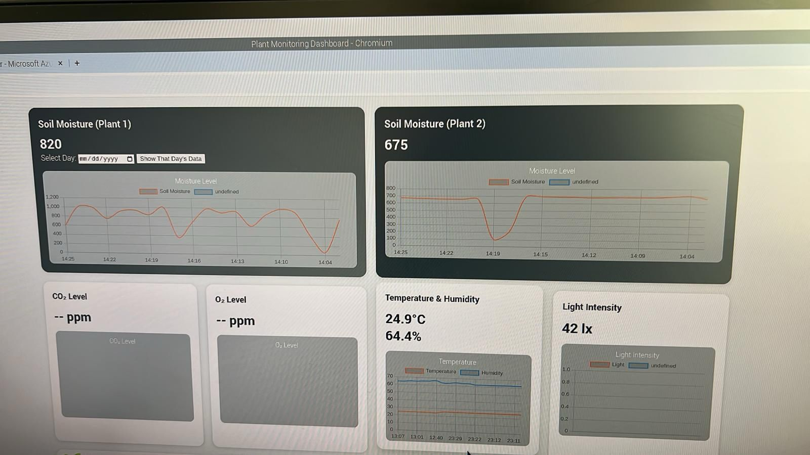
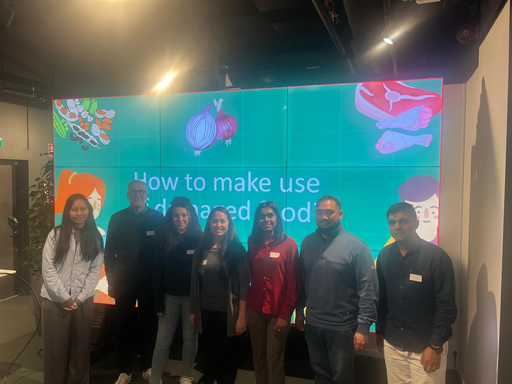

14%
Real-world accuracy
Diagnosed a lab-to-deployment gap and retrained on camera-captured data.
OPEN TO 2027 MASTER THESIS & GRADUATE ROLES
AI / ML Engineer
MSc student in Artificial Intelligence and Machine Learning at Blekinge Institute of Technology, focused on computer vision and LLM applications. I care about the gap between a model that scores well and a model that works once it is deployed.
Diagnosed a lab-to-deployment gap and retrained on camera-captured data.
CNN plant-disease classifier, validated on 4,500+ held-out images.
Reached on the thesis classifier before the deployment work began.
VADER sentiment fused with market data for a Bitcoin movement model.
01 — Approach
My bachelor's thesis is the thing I keep coming back to. I built a CNN that classified plant disease at 95% validation accuracy — and in the field, on images the system's own camera took, it was right 14% of the time.
The fix was not a bigger model. It was understanding that the training set and the deployment camera were looking at two different worlds. Retraining on 500 images from the deployed camera took it to 92%.
That gap is where I like to work. Since then I've built RAG and tool-calling systems in Python, trained models in TensorFlow and PyTorch, and I'm currently developing the historical memory for an autonomous SRE agent that investigates production incidents with Trafikverket.
02 — Selected work

Bachelor's thesis · Jan – Jun 2024 · Kristianstad University
An end-to-end IoT system — soil, temperature and light sensors, a camera, automated irrigation and a cloud dashboard — with on-device plant-disease detection.
2026 – present · BTH team project with Trafikverket
An AI agent that investigates production incidents across Kubernetes, Grafana, Prometheus and OpenTelemetry — turning raw alerts into structured investigations.
❯ agents run --nightly
[profiler] 42 companies profiled
[scout:eu] 18 calls · 6 past deadline dropped
[scout:vin] 11 calls matched
[matcher] 137 pairs ranked
[guard] 3 claims blocked "guaranteed"
✓ quotes verified on source page
❯ Nov 2026 · BUILD Hackathon · Blue Science Park challenge
A multi-agent app that profiles member companies from public evidence and matches them to funding, events, testbeds and partners, refreshed nightly.
Jul 2026 · Personal project
A desktop LLM agent with long-term memory that survives a restart, plus the ability to actually do things on your machine.
Sep – Dec 2025 · BTH
Predicted 1-minute Bitcoin price movement from 23+ engineered features combining market data with VADER sentiment over 49,000+ tweets, using leakage-safe splits.
Compared five models — Linear Regression, Random Forest, XGBoost, SVR and LSTM — with the best reaching ~62% test accuracy.
2025 – 2026 · BTH
Detected anomalies in NASA SMAP & MSL spacecraft telemetry with two LSTM autoencoder architectures, evaluated on precision, recall, F1 and ROC-AUC.
Trained a custom CNN and fine-tuned ResNet-50, VGG-19, DenseNet-121 and EfficientNet-B0 on CIFAR-10/100.
03 — Journey
2025 – 2027 (expected)
Blekinge Institute of Technology · Sweden
Selected courses: Machine Learning (A), Decision Support Systems (A), Deep Machine Learning (B), Advanced Machine Learning.
Mar – Apr 2025
Sustainalink · Sweden
Analysed 500+ surplus frozen meals to find spoilage patterns and proposed three circular reuse solutions to cut food waste. Built a Power BI dashboard and analysed 15+ supplier partners.


Graduated 2025
Kristianstad University · Sweden
Thesis: AI-based plant monitoring with CNN disease detection.
Sep – Nov 2023
Combitech & Kristianstad University
Developed an Android app integrating Google Maps and Mapbox APIs, improving stability through systematic testing and debugging.
04 — Toolkit
05 — Contact
I'm looking for a 2027 master thesis or a graduate role in AI/ML engineering. If you're working on computer vision, LLM systems or anything that has to survive contact with real data, I'd like to hear about it.